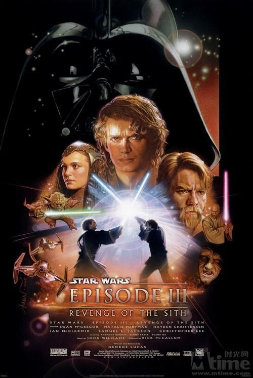

Эпизод III: Месть ситхов
«Звёздные войны. Эпизод III: Месть си́тхов» (англ. Star Wars. Episode III. Revenge of the Sith) — эпический приключенческий фильм 2005 года в жанре космическая опера с элементами мелодрамы, снятый режиссёром и сценаристом Джорджем Лукасом, его шестой полнометражный фильм. Это шестой снятый фильм в саге «Звёздные войны» и третий в фабуле серии. Это двадцатая полнометражная картина компании Lucasfilm.
Идёт третий год Войн клонов. Галактическая Республика, некогда бывшая спокойным и гармоничным государством, превратилась в поле битвы между армиями клонов, возглавляемых канцлером Палпатином, и армадами дроидов, которых ведёт граф Дуку, тёмный лорд ситхов. Республика медленно погружается во тьму. Лишь рыцари-джедаи, защитники мира и справедливости, могут противостоять злу, которое вскоре поглотит галактику. Но настоящая битва идёт в душе у молодого рыцаря-джедая Энакина, который разрывается между долгом джедая и любовью к своей жене, сенатору Падме Амидале. И от того, какое чувство в нём победит, зависит будущее всего мира.